Über den Menüpunkt…
1 WinLine LIST
1 Liste
1 Multi-Belegkalender
… gibt es die Möglichkeit, mehrere Belegzeilen-Auswertungen zu einer gemeinsamen Auswertung zusammenzufassen. Diese Auswertung wird z.B. dann benötigt, wenn zusätzlich zu Detailinfos auch noch Summenwerte mit angezeigt werden sollen.
Nach dem ersten Aufruf des Menüpunktes wird vorerst einmal ein leeres Fenster angezeigt:
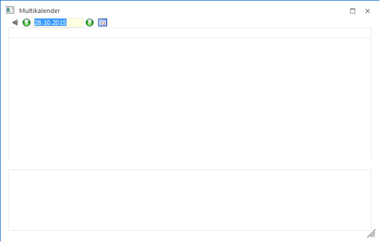
Zuerst muss bestimmt werden, welche Auswertung überhaupt bearbeitet werden soll. Dazu kann die Auswahllistbox "Auswertung" geöffnet werden, wo dann die Einträge "Auswertung 1" bis "Auswertung 5" zur Auswahl stehen, d.h. es können max. 5 Multikalender definiert werden.
Danach muss eingestellt werden, welche Liste(n) im Multikalender ausgewertet werden sollen. Dazu muss der Button Einstellungen aktiviert werden. Dadurch wird dann in den Bereich der Einstellungen gewechselt, wo zunächst folgende Änderungen vorgenommen werden können:
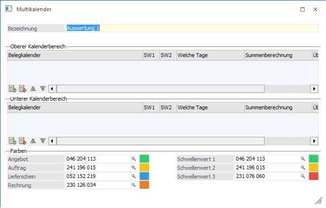
Ø Bezeichnung
Hier kann die Bezeichnung der Auswertung eingetragen werden. Diese Bezeichnung wird in weiterer Folge auch bei der Auswahl der unterschiedlichen Listen angezeigt.
Oberer Kalenderbereich / Unterer Kalenderbereich
In den beiden Tabellen können nun die Belegzeilen-Auswertungen eingetragen werden, die angezeigt werden sollen. Diese Belegzeilen-Auswertungen müssen natürlich vorher im List-Assistenten angelegt worden sein. Das Hinzufügen von Kalenderzeilen erfolgt durch Anklicken des Einfügen-Buttons (), wodurch der List-Matchcode aufgerufen wird, in dem eine der bestehenden Belegzeilen-Auswertung ausgewählt werden kann. Mit den Entfernen-Button () können hinterlegte Einträge wieder gelöscht werden. Mit den Buttons Hinauf (
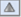
) und Hinunter () kann auch noch die Reihenfolge geändert werden.
Pro Eintrag können noch folgende Einstellungen vorgenommen werden, die in beiden Tabellenbereichen möglich sind:
Ø SW1 / SW2 (Schwellenwert)
Hier kann die Grenze (Schwellenwert) eingestellt werden, ab der die Farbe in der Auswertung geändert werden soll, wobei diese Werte nur dann herangezogen werden, wenn in der Belegzeilenauswertung nur Summen ausgegeben werden (das ist dann der Fall, wenn in der Listdefinition der Belegzeilenauswertung z.B. bei der "Menge bestellt" die Option "Anzahl" aktiviert ist).
Beispiel
Bei SW1 ist 10 und bei SW2 ist 20 eingetragen.
Wird nun in der Auswertung eine Anzahl bis inkl. 10 ausgewiesen, so wird die Summe grün dargestellt.
Wird in der Auswertung eine Anzahl von 11 bis inkl. 20 ausgewiesen, so wird die Summe gelb dargestellt.
Wird in der Auswertung eine Anzahl größer 20 ausgewiesen, so wird die Summe rot dargestellt.
Ø Welche Tage
Über die Auswahllistbox kann gewählt werden, welche Tage für die Auswertung berücksichtigt werden, wobei es folgende Möglichkeiten gibt:
ü 1 alle Tage zählen
ü 2 letzten Tag nicht zählen
ü 3 ersten Tag nicht zählen
ü 4 nur ersten Tag zählen
ü 5 nur letzten Tag zählen
Ø Summenberechnung
Über die Option Summenberechnung kann eingestellt werden, wie die Summenberechnung in dieser Liste erfolgen soll. Dabei stehen derzeit 2 Optionen zur Verfügung:
ü Menge bestellt
Damit wird die
Menge berechnet, die im Beleg auch als Bestellmenge hinterlegt wurde.
ü Menge bestellt * Faktor3
In
diesem Fall wird die Menge bestellt mit dem Faktor 3 aus der Belegmitte
multipliziert.
Ø Überschrift
Mit der Option Überschrift kann gesteuert werden, ob der Name der eingetragenen Liste auch als Überschrift im Kalender angezeigt werden soll. Wurde in der Liste bei einem Feld (z.B. Menge bestellt) die Option "Anzahl" aktiviert, dann wird für diese Liste dann auch eine Summenzeile eingefügt.
Farben
In diesem Bereich kann definiert werden, wie die unterschiedlichen Belegstufen farblich dargestellt werden sollen. Dabei gibt es folgende Möglichkeiten.
ü Angebot
ü Auftrag
ü Lieferschein
ü Rechnung
Zusätzlich dazu können auch die Farben für die Schwellenwerte definiert werden. Durch Anklicken der Lupe bzw. durch Drücken der F9-Taste kann das Fenster mit dem Farbschema geöffnet werden, aus dem dann die gewünschte Farbe übernommen wird. Die Farbe wird mit der RGB-Codierung in das Feld übernommen, wobei der Farbcode auch manuell eingetragen werden kann.
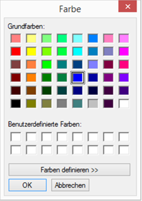
Beispiel für Einstellungen:
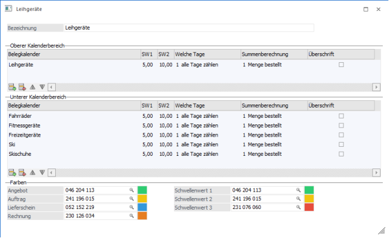
Wenn alle Einstellungen vorgenommen sind, muss wieder der Button Einstellungen angeklickt werden. Dadurch werden alle Einstellungen gespeichert, und es wird das Ergebnis der Einstellungen angezeigt.
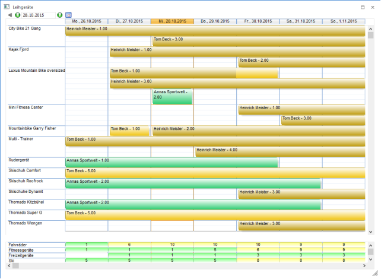
Die weiteren Buttons des Multibelegkalenders
Ø Ansicht
Aus der Auswahllistbox kann gewählt werden, wie der Kalender dargestellt werden soll, wobei die Tagesansicht nicht unterstützt wird:
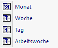
Ø Ende-Button
Durch Anklicken des ENDE-Buttons wird die Ansicht geschlossen.
Ø Ein-/Mehrzeilig
Grundsätzlich wird die Belegzeileninfo Mehrzeilig angezeigt, d.h. der Balken mit der Information ist 2 Zeilen hoch. Durch Anklicken des Buttons Ein-/Mehrzeilig kann die Ansicht auf Einzeilig umgestellt werden. Dadurch sind in der Zeile weniger Informationen sichtbar, dafür können mehr Zeilen angezeigt werden.
Ø Umfang
Über diesen Button kann der Umfang der Auswertung gesteuert werden, wobei es hier zwei Möglichkeiten gibt:
ü Alle
Bei dieser Variante
werden immer alle Datensätze angezeigt, auch wenn dafür keine Einträge vorhanden
sind.
ü Nur mit Einträgen
Bei dieser
Variante werden nur die Datensätze angezeigt, wo auch entsprechende Einträge
vorhanden sind.
Beispiel
Es soll ein Kalender ausgegeben werden, wo die Termine der Vertreter aufgelistet werden. Wird die Liste mit der Option "Nur mit Einträgen" ausgegeben, dann werden nur die Vertreter im Kalender angezeigt, die im ausgewerteten Zeitraum auch einen Termin "eingetragen" haben. Wir die Liste mit der "Alle" ausgegeben, dann werden auch die Vertreter mit angezeigt, die im ausgewerteten Zeitraum keinen Termin eingetragen haben. Damit können dann z.B. auch ServiceTerminpläne erstellt werden, wo dann ersichtlich ist, welcher Techniker wann "frei" ist.
Hinweis
Diese Art der Darstellung wird nur dann unterstützt, wenn es sich bei der Kalenderauswertung um eine gruppierte Ansicht handelt (d.h. im Filter muss eine Sortierung mit Zwischensumme hinterlegt sein).
Ø Drucken-Button
Durch Anklicken des Drucken-Buttons wird die Kalenderansicht ausgedruckt, wobei für den "oberen" und für den "unteren" Bereich eine eigene Auswertung (eigene Seite) erstellt wird.
Wie sollten die Listen aufgebaut sein, die im Multikalender dargestellt werden?
Der Grundgedanke des Multikalenders ist, dass eine Kalenderansicht im Detail und eine Summenansicht gemeinsam dargestellt werden kann, ohne immer mehrere Listen nacheinander aufrufen zu müssen. Damit diese Darstellung klappt, müssen einige Punkte beachtet werden:
1.) Damit ein Artikel in der Kalenderansicht/Detail angezeigt wird, muss in der Belegerfassung im Mittelteil das "Lieferdatum" und das "bestätigte Lieferdatum" ausgefüllt werden. Aus diesen beiden Datümern wird der Balken erstellt.
Wird in der Datei MESONIC.INI der Eintrag
[Invoicing]
WithDate=1
hinzugefügt, dann können die beiden Datümer auch mit Uhrzeit erfasst werden, was die Auswertung am Kalender noch entsprechend verfeinert.
2.) Im Balken der Detailansicht werden die Felder angezeigt, bei denen in der List-Definition die Option "Kalender" aktiviert ist.
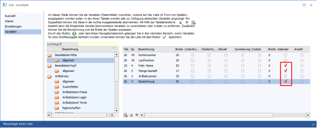
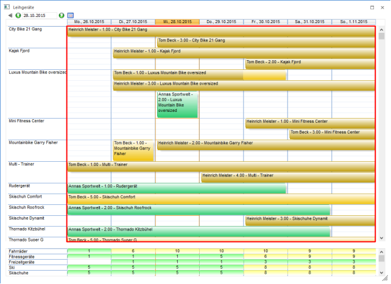
3.) Die Farben der Kalendereinträge ergeben sich aus dem Status der Belege. Zuerst wird von Faktura zu Angebot geprüft ob ein "D" oder ein "*" enthalten ist. Der erste Fund bestimmt die Stufe. Wurde der Beleg noch nicht gerechnet oder gedruckt, wird von Angebot nach Faktura nach "A" oder "M" gesucht. Es werden folgende Standard-Farben verwendet, die über die Einstellungen verändert werden können.
ü Angebot = Grün (Code 046 204 113)
ü Auftrag = Hellbeige (Code 241 196 015)
ü Lieferschein = Blau (Code 052 152 219)
ü Faktura = Orange (230 126 034)
ü Keine Stufe = Weiß (Code 255 255 255) - nicht einstellbar.
Welche Belege im Kalender angezeigt werden sollen, wird über den Filter gesteuert.
4.) Wird bei der Listdefinition bei einem Eintrag (z.B. Menge bestellt) die Option "Anzahl" aktiviert, dann wird pro Tag nur mehr eine Summenzeile (ohne Detailinformationen) angezeigt.
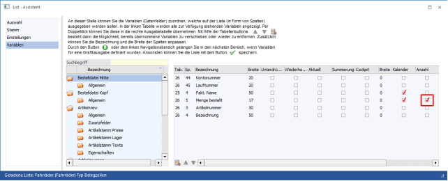
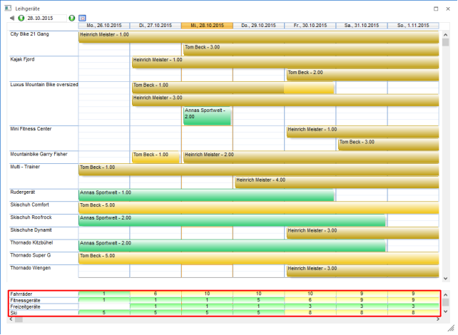
5.) Im Filter muss eine Sortierung und Gruppierung (Zwischensumme) hinterlegt sein, wobei das Sortierkriterium auch für die Beschriftung auf der linken Seite verantwortlich ist. D.h. wenn z.B. eine Sortierung nach der Artikelbezeichnung durchgeführt wird, dann wird auf der linken Seite jeweils die Artikelbezeichnung angezeigt. Wird eine Sortierung nach der Artikelgruppe durchgeführt, dann wird auf der linken Seite nur die Artikelgruppennummer angezeigt (was nicht unbedingt sehr aussagekräftig ist).
Beispiel 1
Sortierung und Zwischensumme nach Artikelbezeichnung aus der Belegmitte:
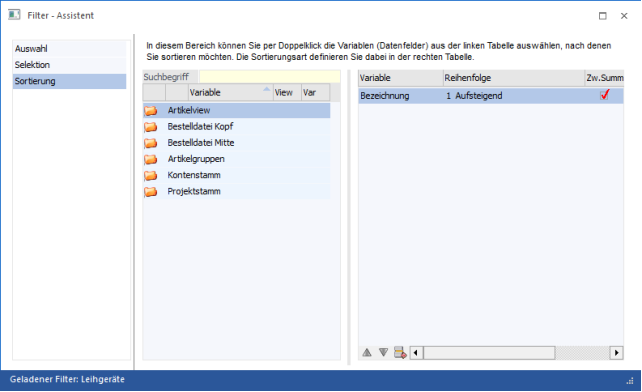
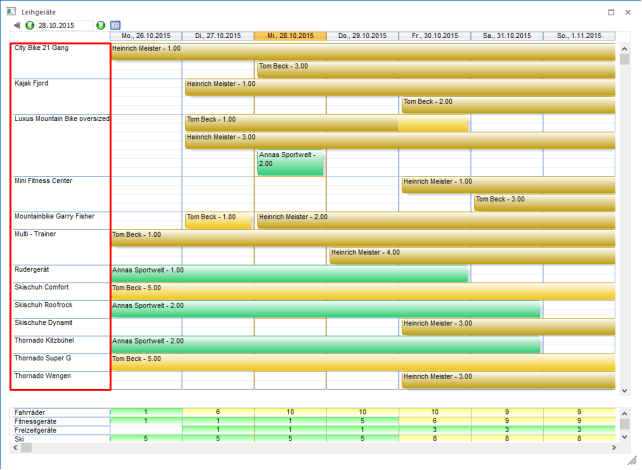
Beispiel 2
Sortierung und Zwischensumme nach der Artikelgruppe aus der Belegmitte:
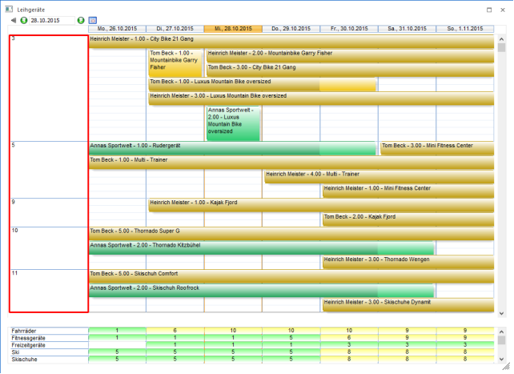
6.) Wenn man mit der Maus über einen Eintrag im Belegkalender fährt, dann ist ersichtlich, dass sich der Mauszeiger in eine Hand umwandelt - d.h. die Bezeichnung birgt eine DrillDown-Funktion. Über die Rechte Maustaste lässt sich definierten, welche Aktion ausgeführt werden soll, wobei standardmäßig folgende Optionen zur Verfügung stehen:
ü Belegmanagement
Mit dieser
Funktion wird das Belegmanagement mit der Selektion auf den ausgewählten Beleg
geöffnet. Dort können dann die unterschiedlichsten Aktionen (abhängig von der
Belegstufe des ausgewählten Belegs) durchgeführt werden. Wird das
Belegmanagement geschlossen, wird wieder in den Belegkalender zurück
gewechselt.
ü Info
Mit dieser Funktion wird
auch das Belegmanagement mit der Selektion auf den ausgewählten Beleg geöffnet,
allerdings wird dann auch gleich die Beleginfo gestartet. D.h. damit kann der
Beleg nochmals in der letzten Belegstufe angesehen werden. Wird die Vorschau
bzw. das Belegmanagement geschlossen, wird wieder in den Belegkalender zurück
gewechselt.
ü Als Beleg bearbeiten
Abhängig
von der Belegstufe des Beleges können auch noch die unterschiedlichen
Belegstufen bearbeitet werden.
Die zuletzt verwendete Aktion wird auch benutzerspezifisch gespeichert.